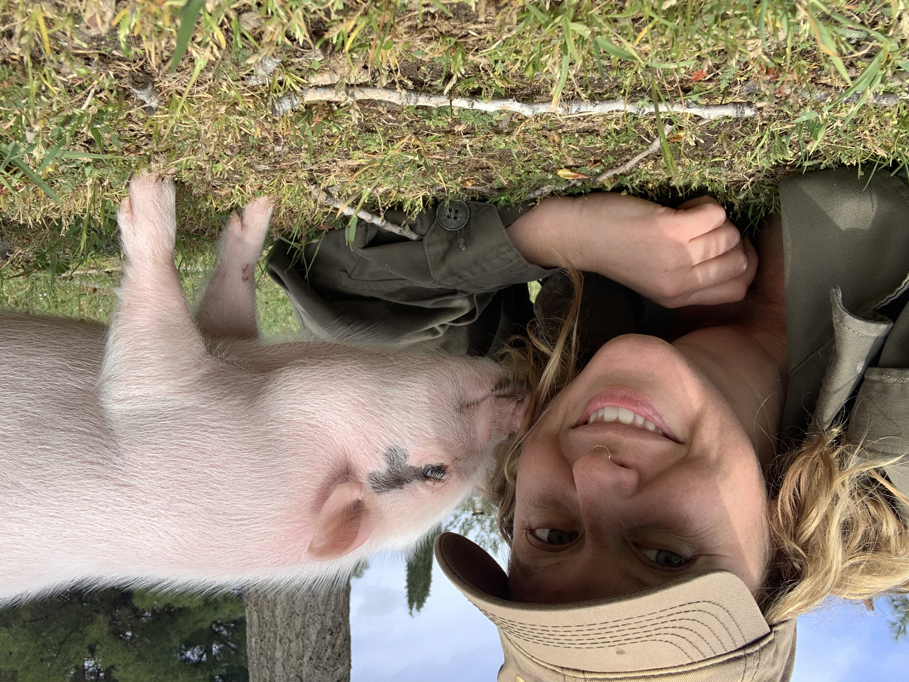

About Shani
Shani Sears (she/they), the co-founder of Sunshine Earth Design, is a passionate advocate for improving
the Earth and its soil. Through her small business, she aims to create healthy and natural ecosystems that can
coexist harmoniously with humans while promoting food sovereignty for all. With a deep-rooted connection to
the Earth as a long-time caretaker, Shani is driven to utilize her extensive knowledge and unwavering commitment
to sustainable and regenerative living. When she's not busy digging in the dirt and designing gardens, you can
find her singing in her garden sanctuary, dancing barefoot among the flowers, or diving into the refreshing
waters of lakes and oceans, seeking the tranquility of swimming and the beauty of waterfalls.
Shani's enthusiasm
for sustainable living extends beyond her work. As a passionately vegan individual, she advocates for animal
rights and welfare. She believes in fostering a compassionate and cruelty-free world, where all beings are
treated with respect and kindness. Shani's dedication to veganism is an integral part of her vision for a
sustainable future. In addition to her love for animals and the Earth, Shani envisions a future where she
can combine her passion for permaculture and education. Her dream is to establish a permaculture animal
sanctuary ecovillage, where rescued animals are given a safe and loving home, and where she can teach children
and community members how to grow their own food and care for the Earth. Shani really looks forward to the
support and collaboration of like-minded individuals, appreciating any connections, advice, or opportunities
that can contribute to her journey. Her vision is inspired by the belief that each individual has the power to
bring about positive change. By being the change they wish to see, Shani strives to create a brighter future
for our planet, all its inhabitants, and the well-being of animals everywhere.